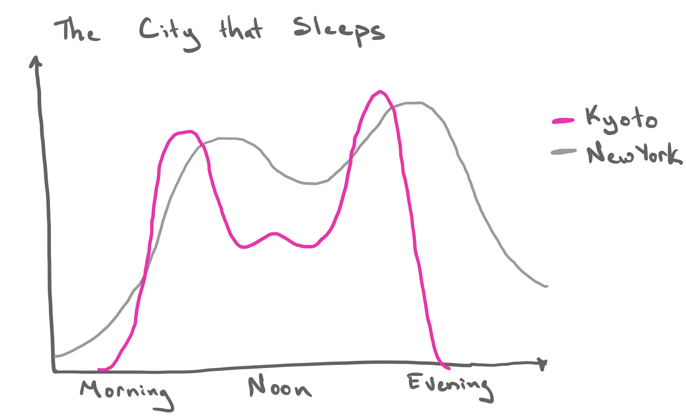

Dates and Times II
Time spans and time zones.
Please answer the following two questions. I will call on someone randomly after the timer is up.
- How long is a day?
- How long is a year?
00:30
Agenda
- How does a computer Store dates and times?
- How do we Create dates and times?
- How do we Get and Set them?
- How do you specify Time Spans?
- How do you account for Time Zones?
Time Spans
Quick aside
In addition to a POSIXct vector, you can store simpler date data in a Date vector, created with as.Date().
How old am I?
Durations
Subtraction of two Date vectors -> difftime vector.
[1] "difftime"A difftime can be recorded in many different units, so better to use lubridate::as.duration() to always record it in seconds.
Constructing a duration
You can make a duration by coercing a Date object or using a constructor function.
Some Wrinkles
[1] "2026-03-08 01:00:00 EST"Daylight savings time!
Please answer the following two questions. I will call on someone randomly after the timer is up.
- How long is a day?
- How long is a year?
Periods
In lubridate, a period is like a duration except it doesn’t have a fixed length in seconds. It tracks human units (day, week) that are responsive to irregularities.
Example period constructors:
Working with periods
How old will I be…
In a year?
Time Spans recap
Base R
difftime: inconsistent units
lubridate
duration: fixed span in secondsperiod: variable span in human unitsinterval: duration plus a starting point
The City that Sleeps

Sketch one data frame indicating the rows and cols (and their type) to make this plot in ggplot2.
Sketch two data frames that represent the original raw data as it likely is recorded by the Kyoto transit authority and the New York transit authority.
04:00
Time Zones
UTC
Coordinated Universal Time (UTC) is primary global time standard. Successor to GMT.
Offsets
Each time zone has a particular offset from UTC.
- London: +0
- New York: -5
- Kyoto: +9
. . .
[1] "Etc/UTC". . .
Olson Names
[1] "Africa/Abidjan" "Africa/Accra"
[3] "Africa/Addis_Ababa" "Africa/Algiers"
[5] "Africa/Asmara" "Africa/Bamako"
[7] "Africa/Bangui" "Africa/Banjul"
[9] "Africa/Bissau" "Africa/Blantyre"
[11] "Africa/Brazzaville" "Africa/Bujumbura"
[13] "Africa/Cairo" "Africa/Casablanca"
[15] "Africa/Ceuta" "Africa/Conakry"
[17] "Africa/Dakar" "Africa/Dar_es_Salaam"
[19] "Africa/Djibouti" "Africa/Douala"
[21] "Africa/El_Aaiun" "Africa/Freetown"
[23] "Africa/Gaborone" "Africa/Harare"
[25] "Africa/Johannesburg" "Africa/Juba"
[27] "Africa/Kampala" "Africa/Khartoum"
[29] "Africa/Kigali" "Africa/Kinshasa"
[31] "Africa/Lagos" "Africa/Libreville"
[33] "Africa/Lome" "Africa/Luanda"
[35] "Africa/Lubumbashi" "Africa/Lusaka"
[37] "Africa/Malabo" "Africa/Maputo"
[39] "Africa/Maseru" "Africa/Mbabane"
[41] "Africa/Mogadishu" "Africa/Monrovia"
[43] "Africa/Nairobi" "Africa/Ndjamena"
[45] "Africa/Niamey" "Africa/Nouakchott"
[47] "Africa/Ouagadougou" "Africa/Porto-Novo"
[49] "Africa/Sao_Tome" "Africa/Timbuktu"
[51] "Africa/Tripoli" "Africa/Tunis"
[53] "Africa/Windhoek" "America/Adak"
[55] "America/Anchorage" "America/Anguilla"
[57] "America/Antigua" "America/Araguaina"
[59] "America/Argentina/Buenos_Aires" "America/Argentina/Catamarca"
[61] "America/Argentina/Cordoba" "America/Argentina/Jujuy"
[63] "America/Argentina/La_Rioja" "America/Argentina/Mendoza"
[65] "America/Argentina/Rio_Gallegos" "America/Argentina/Salta"
[67] "America/Argentina/San_Juan" "America/Argentina/San_Luis"
[69] "America/Argentina/Tucuman" "America/Argentina/Ushuaia"
[71] "America/Aruba" "America/Asuncion"
[73] "America/Atikokan" "America/Atka"
[75] "America/Bahia" "America/Bahia_Banderas"
[77] "America/Barbados" "America/Belem"
[79] "America/Belize" "America/Blanc-Sablon"
[81] "America/Boa_Vista" "America/Bogota"
[83] "America/Boise" "America/Cambridge_Bay"
[85] "America/Campo_Grande" "America/Cancun"
[87] "America/Caracas" "America/Cayenne"
[89] "America/Cayman" "America/Chicago"
[91] "America/Chihuahua" "America/Ciudad_Juarez"
[93] "America/Coral_Harbour" "America/Costa_Rica"
[95] "America/Coyhaique" "America/Creston"
[97] "America/Cuiaba" "America/Curacao"
[99] "America/Danmarkshavn" "America/Dawson"
[101] "America/Dawson_Creek" "America/Denver"
[103] "America/Detroit" "America/Dominica"
[105] "America/Edmonton" "America/Eirunepe"
[107] "America/El_Salvador" "America/Ensenada"
[109] "America/Fort_Nelson" "America/Fortaleza"
[111] "America/Glace_Bay" "America/Goose_Bay"
[113] "America/Grand_Turk" "America/Grenada"
[115] "America/Guadeloupe" "America/Guatemala"
[117] "America/Guayaquil" "America/Guyana"
[119] "America/Halifax" "America/Havana"
[121] "America/Hermosillo" "America/Indiana/Indianapolis"
[123] "America/Indiana/Knox" "America/Indiana/Marengo"
[125] "America/Indiana/Petersburg" "America/Indiana/Tell_City"
[127] "America/Indiana/Vevay" "America/Indiana/Vincennes"
[129] "America/Indiana/Winamac" "America/Inuvik"
[131] "America/Iqaluit" "America/Jamaica"
[133] "America/Juneau" "America/Kentucky/Louisville"
[135] "America/Kentucky/Monticello" "America/Kralendijk"
[137] "America/La_Paz" "America/Lima"
[139] "America/Los_Angeles" "America/Lower_Princes"
[141] "America/Maceio" "America/Managua"
[143] "America/Manaus" "America/Marigot"
[145] "America/Martinique" "America/Matamoros"
[147] "America/Mazatlan" "America/Menominee"
[149] "America/Merida" "America/Metlakatla"
[151] "America/Mexico_City" "America/Miquelon"
[153] "America/Moncton" "America/Monterrey"
[155] "America/Montevideo" "America/Montreal"
[157] "America/Montserrat" "America/Nassau"
[159] "America/New_York" "America/Nipigon"
[161] "America/Nome" "America/Noronha"
[163] "America/North_Dakota/Beulah" "America/North_Dakota/Center"
[165] "America/North_Dakota/New_Salem" "America/Nuuk"
[167] "America/Ojinaga" "America/Panama"
[169] "America/Pangnirtung" "America/Paramaribo"
[171] "America/Phoenix" "America/Port_of_Spain"
[173] "America/Port-au-Prince" "America/Porto_Acre"
[175] "America/Porto_Velho" "America/Puerto_Rico"
[177] "America/Punta_Arenas" "America/Rainy_River"
[179] "America/Rankin_Inlet" "America/Recife"
[181] "America/Regina" "America/Resolute"
[183] "America/Rio_Branco" "America/Santa_Isabel"
[185] "America/Santarem" "America/Santiago"
[187] "America/Santo_Domingo" "America/Sao_Paulo"
[189] "America/Scoresbysund" "America/Shiprock"
[191] "America/Sitka" "America/St_Barthelemy"
[193] "America/St_Johns" "America/St_Kitts"
[195] "America/St_Lucia" "America/St_Thomas"
[197] "America/St_Vincent" "America/Swift_Current"
[199] "America/Tegucigalpa" "America/Thule"
[201] "America/Thunder_Bay" "America/Tijuana"
[203] "America/Toronto" "America/Tortola"
[205] "America/Vancouver" "America/Virgin"
[207] "America/Whitehorse" "America/Winnipeg"
[209] "America/Yakutat" "America/Yellowknife"
[211] "Antarctica/Casey" "Antarctica/Davis"
[213] "Antarctica/DumontDUrville" "Antarctica/Macquarie"
[215] "Antarctica/Mawson" "Antarctica/McMurdo"
[217] "Antarctica/Palmer" "Antarctica/Rothera"
[219] "Antarctica/Syowa" "Antarctica/Troll"
[221] "Antarctica/Vostok" "Arctic/Longyearbyen"
[223] "Asia/Aden" "Asia/Almaty"
[225] "Asia/Amman" "Asia/Anadyr"
[227] "Asia/Aqtau" "Asia/Aqtobe"
[229] "Asia/Ashgabat" "Asia/Atyrau"
[231] "Asia/Baghdad" "Asia/Bahrain"
[233] "Asia/Baku" "Asia/Bangkok"
[235] "Asia/Barnaul" "Asia/Beirut"
[237] "Asia/Bishkek" "Asia/Brunei"
[239] "Asia/Chita" "Asia/Choibalsan"
[241] "Asia/Chongqing" "Asia/Colombo"
[243] "Asia/Damascus" "Asia/Dhaka"
[245] "Asia/Dili" "Asia/Dubai"
[247] "Asia/Dushanbe" "Asia/Famagusta"
[249] "Asia/Gaza" "Asia/Harbin"
[251] "Asia/Hebron" "Asia/Ho_Chi_Minh"
[253] "Asia/Hong_Kong" "Asia/Hovd"
[255] "Asia/Irkutsk" "Asia/Istanbul"
[257] "Asia/Jakarta" "Asia/Jayapura"
[259] "Asia/Jerusalem" "Asia/Kabul"
[261] "Asia/Kamchatka" "Asia/Karachi"
[263] "Asia/Kashgar" "Asia/Kathmandu"
[265] "Asia/Khandyga" "Asia/Kolkata"
[267] "Asia/Krasnoyarsk" "Asia/Kuala_Lumpur"
[269] "Asia/Kuching" "Asia/Kuwait"
[271] "Asia/Macau" "Asia/Magadan"
[273] "Asia/Makassar" "Asia/Manila"
[275] "Asia/Muscat" "Asia/Nicosia"
[277] "Asia/Novokuznetsk" "Asia/Novosibirsk"
[279] "Asia/Omsk" "Asia/Oral"
[281] "Asia/Phnom_Penh" "Asia/Pontianak"
[283] "Asia/Pyongyang" "Asia/Qatar"
[285] "Asia/Qostanay" "Asia/Qyzylorda"
[287] "Asia/Riyadh" "Asia/Sakhalin"
[289] "Asia/Samarkand" "Asia/Seoul"
[291] "Asia/Shanghai" "Asia/Singapore"
[293] "Asia/Srednekolymsk" "Asia/Taipei"
[295] "Asia/Tashkent" "Asia/Tbilisi"
[297] "Asia/Tehran" "Asia/Tel_Aviv"
[299] "Asia/Thimphu" "Asia/Tokyo"
[301] "Asia/Tomsk" "Asia/Ulaanbaatar"
[303] "Asia/Urumqi" "Asia/Ust-Nera"
[305] "Asia/Vientiane" "Asia/Vladivostok"
[307] "Asia/Yakutsk" "Asia/Yangon"
[309] "Asia/Yekaterinburg" "Asia/Yerevan"
[311] "Atlantic/Azores" "Atlantic/Bermuda"
[313] "Atlantic/Canary" "Atlantic/Cape_Verde"
[315] "Atlantic/Faroe" "Atlantic/Jan_Mayen"
[317] "Atlantic/Madeira" "Atlantic/Reykjavik"
[319] "Atlantic/South_Georgia" "Atlantic/St_Helena"
[321] "Atlantic/Stanley" "Australia/Adelaide"
[323] "Australia/Brisbane" "Australia/Broken_Hill"
[325] "Australia/Canberra" "Australia/Currie"
[327] "Australia/Darwin" "Australia/Eucla"
[329] "Australia/Hobart" "Australia/Lindeman"
[331] "Australia/Lord_Howe" "Australia/Melbourne"
[333] "Australia/Perth" "Australia/Sydney"
[335] "Australia/Yancowinna" "CET"
[337] "CST6CDT" "EET"
[339] "EST" "EST5EDT"
[341] "Etc/GMT" "Etc/GMT-0"
[343] "Etc/GMT-1" "Etc/GMT-10"
[345] "Etc/GMT-11" "Etc/GMT-12"
[347] "Etc/GMT-13" "Etc/GMT-14"
[349] "Etc/GMT-2" "Etc/GMT-3"
[351] "Etc/GMT-4" "Etc/GMT-5"
[353] "Etc/GMT-6" "Etc/GMT-7"
[355] "Etc/GMT-8" "Etc/GMT-9"
[357] "Etc/GMT+0" "Etc/GMT+1"
[359] "Etc/GMT+10" "Etc/GMT+11"
[361] "Etc/GMT+12" "Etc/GMT+2"
[363] "Etc/GMT+3" "Etc/GMT+4"
[365] "Etc/GMT+5" "Etc/GMT+6"
[367] "Etc/GMT+7" "Etc/GMT+8"
[369] "Etc/GMT+9" "Etc/GMT0"
[371] "Etc/Greenwich" "Etc/UCT"
[373] "Etc/Universal" "Etc/UTC"
[375] "Etc/Zulu" "Europe/Amsterdam"
[377] "Europe/Andorra" "Europe/Astrakhan"
[379] "Europe/Athens" "Europe/Belfast"
[381] "Europe/Belgrade" "Europe/Berlin"
[383] "Europe/Bratislava" "Europe/Brussels"
[385] "Europe/Bucharest" "Europe/Budapest"
[387] "Europe/Busingen" "Europe/Chisinau"
[389] "Europe/Copenhagen" "Europe/Dublin"
[391] "Europe/Gibraltar" "Europe/Guernsey"
[393] "Europe/Helsinki" "Europe/Isle_of_Man"
[395] "Europe/Istanbul" "Europe/Jersey"
[397] "Europe/Kaliningrad" "Europe/Kirov"
[399] "Europe/Kyiv" "Europe/Lisbon"
[401] "Europe/Ljubljana" "Europe/London"
[403] "Europe/Luxembourg" "Europe/Madrid"
[405] "Europe/Malta" "Europe/Mariehamn"
[407] "Europe/Minsk" "Europe/Monaco"
[409] "Europe/Moscow" "Europe/Nicosia"
[411] "Europe/Oslo" "Europe/Paris"
[413] "Europe/Podgorica" "Europe/Prague"
[415] "Europe/Riga" "Europe/Rome"
[417] "Europe/Samara" "Europe/San_Marino"
[419] "Europe/Sarajevo" "Europe/Saratov"
[421] "Europe/Simferopol" "Europe/Skopje"
[423] "Europe/Sofia" "Europe/Stockholm"
[425] "Europe/Tallinn" "Europe/Tirane"
[427] "Europe/Tiraspol" "Europe/Ulyanovsk"
[429] "Europe/Vaduz" "Europe/Vatican"
[431] "Europe/Vienna" "Europe/Vilnius"
[433] "Europe/Volgograd" "Europe/Warsaw"
[435] "Europe/Zagreb" "Europe/Zurich"
[437] "Factory" "GMT"
[439] "HST" "Indian/Antananarivo"
[441] "Indian/Chagos" "Indian/Christmas"
[443] "Indian/Cocos" "Indian/Comoro"
[445] "Indian/Kerguelen" "Indian/Mahe"
[447] "Indian/Maldives" "Indian/Mauritius"
[449] "Indian/Mayotte" "Indian/Reunion"
[451] "MET" "MST"
[453] "MST7MDT" "Pacific/Apia"
[455] "Pacific/Auckland" "Pacific/Bougainville"
[457] "Pacific/Chatham" "Pacific/Chuuk"
[459] "Pacific/Easter" "Pacific/Efate"
[461] "Pacific/Fakaofo" "Pacific/Fiji"
[463] "Pacific/Funafuti" "Pacific/Galapagos"
[465] "Pacific/Gambier" "Pacific/Guadalcanal"
[467] "Pacific/Guam" "Pacific/Honolulu"
[469] "Pacific/Johnston" "Pacific/Kanton"
[471] "Pacific/Kiritimati" "Pacific/Kosrae"
[473] "Pacific/Kwajalein" "Pacific/Majuro"
[475] "Pacific/Marquesas" "Pacific/Midway"
[477] "Pacific/Nauru" "Pacific/Niue"
[479] "Pacific/Norfolk" "Pacific/Noumea"
[481] "Pacific/Pago_Pago" "Pacific/Palau"
[483] "Pacific/Pitcairn" "Pacific/Pohnpei"
[485] "Pacific/Port_Moresby" "Pacific/Rarotonga"
[487] "Pacific/Saipan" "Pacific/Samoa"
[489] "Pacific/Tahiti" "Pacific/Tarawa"
[491] "Pacific/Tongatapu" "Pacific/Wake"
[493] "Pacific/Wallis" "Pacific/Yap"
[495] "PST8PDT" "UTC"
[497] "WET"
attr(,"Version")
[1] "2026c"Changing time
Two flavors
Change the instant in time.
[1] "2024-06-01 12:00:00 EDT"